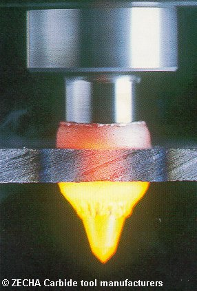

LMP>Research Guidelines>FURCON>Flow Drilling
OBJECTIVESOn this work the flow drilling process fundaments are studied through assays results analysis verifying the influence of several factors on process optimization. PROCEDURESThe bushing formed on flow drilling process may be threaded later and used
as substitute for some usual applications, such as welded nuts and riveted
nuts. RESULTSThe work results are evaluated through burr shape and quality, the size of thermomechanical affected region and tool wear. At last all those factors must be evaluated in means of productivity and costs in order to verify the economical viability of the process. The main advantages of this process are:
 |
| Contact: FURCON Walter Lindolfo Weingaertner Prof. Dr.-Ing |
Last update 06.07.2006 |